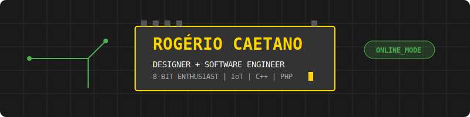

👨💻 Rogério Caetano 
Software Engineer/Software Architect

Hi, I'm Rogério Caetano!🤗
🎨 Graphic Design Specialist | 💻 Software Engineering | 👾 Retrocomputing & IoT
I am a professional with over 20 years of experience in the visual arts, now merging my solid background in Design and Communication with software and hardware development. With a postgraduate degree in Graphic Design from Estácio de Sá, my career has been defined by solving complex problems through creativity—a skill I now apply to embedded systems and software engineering.
🚀 Background & Expertise
- Design & Illustration: With extensive experience in major media outlets and editorial projects, I've developed a systemic product vision that I bring to my coding. I believe software, like design, must be functional, efficient, and well-structured.
- Professional Maturity: Two decades of professional practice have provided me with the discipline and critical thinking required to master complex technologies in a self-taught and structured manner.
- Hardware & Low-Level: I am passionate about the "soul" of computing. I dedicate my time to studying Z80 Assembly, C/C++, and 8-bit architectures (MSX/ZX Spectrum), alongside hands-on projects with ESP32 and Arduino.
🛠️ Tech Stack & Tools
| Category |
Technologies |
| Languages |
PHP, Javascript, C/C++, Python, Z80 Assembly, COBOL |
| Frameworks/Web |
Symfony (PHP), Laravel (PHP), Sass (CSS), ReactJS, NodeJS, HTML/CSS |
| Hardware/IoT |
Arduino, NodeMCU, ESP32, Raspberry Pi |
| Design |
Adobe Creative Suite, Illustration, Art Direction |
| Environment |
WSL (Linux), Linux, Docker, VS Code |
📚 Personal Interests
- 🕹️ Retrocomputing: 8-bit systems preservation and programming.
- 🎨 Visual Arts: Continuous practice in watercolor, gouache, and acrylics.
- 🔌 Electronics: Prototyping and circuit building.
- 🎥 Culture: Classical literature, cinema, and music (bass guitar).
📫 Get in Touch
Whether it's to discuss the future of IoT or to talk about the golden age of 8-bit microcomputers, feel free to reach out!
LinkedIn | E-mail


👨💻 Rogério Caetano
Software Engineer/Software Architect
Olá, eu sou o Rogério Caetano! 👋
🎨 Especialista em Design Gráfico | 💻 Desenvolvedor de sistemas | 👾 Retrocomputação & IoT
Sou um profissional com mais de 20 anos de trajetória no universo visual, agora unindo minha sólida experiência em Design e Comunicação com o desenvolvimento de software e hardware. Sou pós-graduado em Design Gráfico pela Estácio de Sá (Juiz de Fora) e minha carreira é marcada pela resolução de problemas complexos através da criatividade — habilidade que hoje direciono para sistemas embarcados e engenharia de software.
🚀 Trajetória & Background
- Design & Ilustração: Com vasta experiência em grandes veículos e projetos editoriais, desenvolvi uma visão sistêmica de produto que aplico no código. Entendo que o software, assim como o design, deve ser funcional, eficiente e bem estruturado.
- Experiência Consolidada: Duas décadas de atuação profissional me deram a disciplina e o olhar crítico necessários para migrar para tecnologias complexas de forma estruturada e autodidata.
- Hardware & Low-Level: Sou apaixonado pela "alma" da computação. Dedico meu tempo ao estudo de Assembly Z80, C/C++ e arquiteturas de 8 bits (MSX/ZX Spectrum), além de projetos práticos com ESP32 e Arduino.
🛠️ Stack Técnica & Ferramentas
| Categoria |
Tecnologias |
| Linguagens |
PHP, Javascript, C/C++, Python, Z80 Assembly, COBOL |
| Frameworks/Web |
Symfony (PHP), Laravel (PHP), Sass (CSS), ReactJS, NodeJS, HTML/CSS |
| Hardware/IoT |
Arduino, NodeMCU, ESP32, Raspberry Pi |
| Design |
Adobe Creative Suite, Ilustração, Direção de Arte |
| Ambiente |
WSL (Linux), Linux, Docker, VS Code |
📚 Interesses Pessoais
- 🕹️ Retrocomputaria: Preservação e programação para sistemas de 8 bits.
- 🎨 Artes Visuais: Prática contínua de aquarela, guache e pintura acrílica.
- 🔌 Eletrônica: Prototipagem e montagem de circuitos.
- 🎥 Cultura: Literatura clássica, cinema e música (baixo).
📫 Vamos conectar?
Seja para discutir o futuro do IoT ou para falar sobre a era de ouro dos microcomputadores de 8 bits, sinta-se à vontade para entrar em contato!
LinkedIn | E-mail